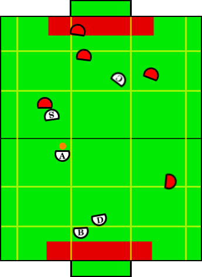

Play: Single Assist Offense
Description:
Single assist is the primary offensive play of the system and is the first
to be called once any of our robots (excluding the blocker) gets possession
of the ball. The primary objective is moving the ball up the field with
the aggressor using dribbling and juking techniques. This play will always
branch to one of the various other offensive plays once a timer has run
out.
Illustration:

Positions Present:
- Blocker
- Defender
- Aggressor
- Special Op Aggressor
- Creator
Position Strategies:
Blocker + Defender:
Work together cutting down shots in same fashion as described in Loose Defense.
Call TandemBlockerSkill and TandemDefenderSkill
|
Aggressor:
Advance ball upfield by whatever means necessary:
- Primarily use dribblePoint to
advance ball to point on same side of field, however, more heuristics may
incorporate numbers of robots on either side of field upfield and make
more proper decision.
- When dribbling becomes frustrated use dribble around pick
or juke skills.
- As described by transitions, may decide to work closer with
creator and special op creator/aggressor either with picks, passes, or
transition to jam and shoot to directly score.
- If creator is open for a upfield pass then pass to him.
Call AdvanceBallUpfieldSkill
|
Special Op Aggressor:
Move up along with the aggressor. Either run strong arm offense
skill or screen on attacking opponents. Always looking back at Aggressor
for a quick dish-pass. When opponents get near, set up picks. Once
aggressor moves past an imaginary line (x-cord) special op should fall back
and travel just behind the aggressor. This opens up space for shots and
dribbling for the aggressor since room will be limited, as well as sets
the special op to become the aggressor if the ball gets knocked just
behind the aggressor.
Aggressor's action function will either call StiffarmOffenseSkill or BehindScreenOffenseSkill
|
Creator:
Get open for forward pass on opposite side of field as aggressor.
Always be prepared to fall forward for cross-crease pass.
Call CreatorLookForwardPassSkill
|
Transitions:
|
If we no longer have possession of the ball, then transition to upfield defense.
|
|
After ball moves into the offensive zone a timer begins. Once the timer goes past a
threshold and the play is still running it will immediately transition to Double Pick
Offense if there exist 2 opponents between the ball and the opponent goal, neither of which
is in the opponent defense zone (thus excluding the opponent blocker), and are between the
split line and the side line closer to the ball. This constraint ensures that if the play
does transition that there will exist to opponents that the special op creator and creator
can pick and leave open the other half of the field for the aggressor to take the ball up
through.
|
|
Refer to the transition to Double Pick Offense, however, if the constraint does not
hold for a double pick when the timer passes the threshold, transition to Creator Assist
Offense since a double pick would not be helpful. |
|
If there is a clear shot from the aggressor's current position on the goal.
|
|
If the timer has not run out, the creator signals he is open for a pass, and the
only movement would require a small rotation and very small lateral movement.
|
|
No transition yet, this is an extension play we'll develop later time permitting.
The basic idea is that the aggressor passes to another robot, who immediately kicks it right
back to him. Meanwhile the opponents run over in the wrong direction and we use their
filtering/poor prediction against them, rushing around upfield in the opposite direction.
|
Position Switching:
- Aggressor, SpecialOpAggressor, Creator
|
- If special op farther upfield than creator, switch
- If creator or special op has possession of the ball and the aggressor does not,
switch with aggressor.
|
|